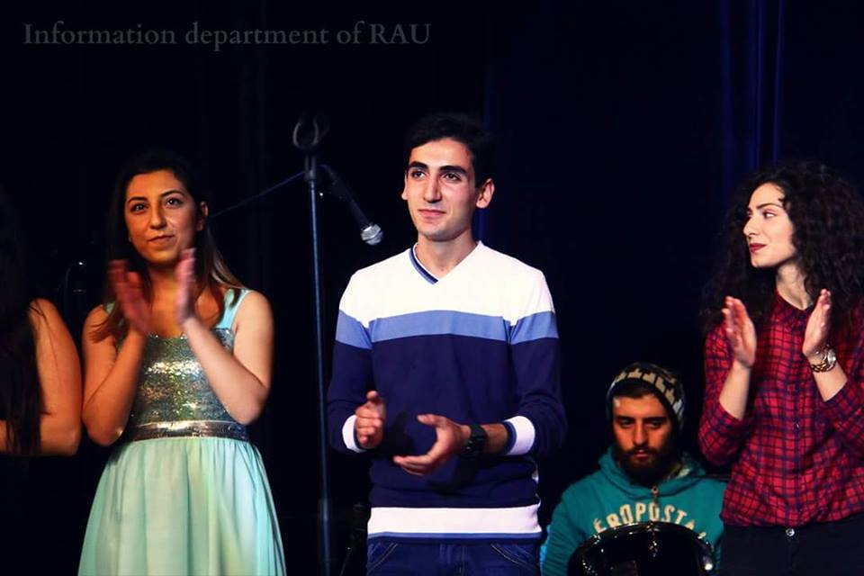
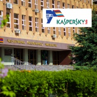
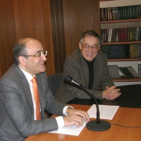
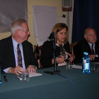
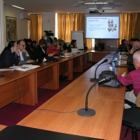
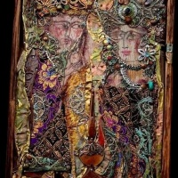
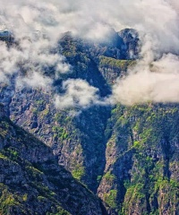
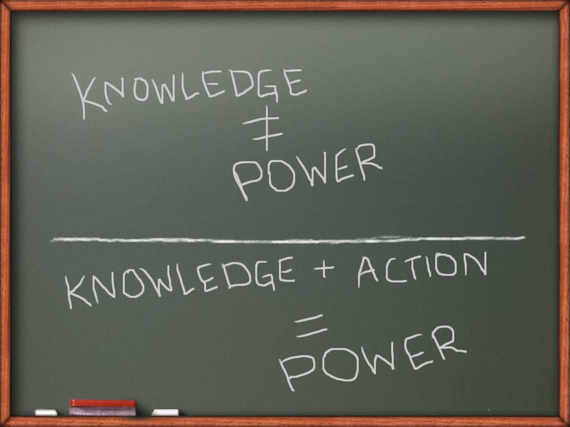

Выпуск: 197 от 13/07/2016, Рубрика: Inter-View
История опьяневшего от холода человека
Гармоничное сочетание искусства с наукой, творчество, воспоминания, мечты и многое другое пианиста №1 РАУ: студент по направлению “Инфокоммуникационные технологии и системы связи” Андраник Мкоян представляет новую композицию "Drunk from the cold" специально для “Газеты.РАУ”!
- Андраник, ваша композиция “The sound of a million dreams” была признана лучшей на конкурсе “Талант РАУ - 2015”. Сейчас Вы выпустили новое видео “Drunk from the cold”. Скажите, что Вас вдохновляет на создание новых композиций?
- В один момент все накопившееся - плохое или хорошее, за месяц или за два - заставляет тебя передать эмоции кому-то или чему-то. На данный момент я передаю чувства пианино.
- Сложно ли совмещать творчество с изучаемыми Вами науками?
- Совмещать? Одно другому не мешает, но я себя больше считаю музыкантом, чем физиком.
- Кто повлиял на Ваш стиль и музыку, на творчество в целом?
- На мой стиль повлиял больше всего Людовико Эйнауди. Многие говорят, что мои композиции в чем-то похожи на произведения Эйнауди, но это меня только радует.
А на творчество, наверное, повлиял отец. Помню, в детстве я не мог при нем ничего сыграть. Из-за его взгляда я забывал все ноты, потел, сердце начинало сильно биться. В 14 лет я сыграл отцу свою первую серьезную композицию, она ему понравилась. С этого момента, наверное, все и началось.
- О чем “Drunk from the cold”?
- Это история одного человека, который опьянел от холода со стороны близких ему людей. Что добавить: название говорит само за себя, разве не так?
- Если бы у Вас была возможность перемещаться во времени, где и когда Вы бы выступили?

- Я бы выступил в 1989 году на Live Seattle, вместе с Джеймсом Хетфилдом.
- С кем из музыкантов Вы бы хотели встретиться? Почему?
- С Элтоном Джоном, потому что он тоже пианист и мастер своего дела. Он бы точно научил меня тому, что мне бы пригодилось.
- А когда же нам ждать сольного концерта?
- Сольный концерт... Это будет звучать слишком высокомерно с моей стороны, но мы с ребятами планируем в октябре этого года выступить в РАУ и других вузах.
- Скажите, пожалуйста, а что нового произошло в Вашей жизни с момента поступления в РАУ?
- Я приобрел много друзей, знакомых. Для меня открылись новые возможности проявить себя на любом фронте. И, конечно, накопилась масса положительных эмоций.
- А помните ли Вы себя в день подачи документов?
- Помню. Было 6-ое июля, я выбирал между двумя направлениями: мне подробно и с улыбкой объясняли, в чем разница между двумя специальностями. В итоге я выбрал “Инфокоммуникационные технологии и системы связи” и сейчас понимаю, что не ошибся. Хочу пожелать удачи абитуриентам. Главное - верить в свои силы!
- Андраник, давайте напоследок поиграем в ассоциации. Я называю слово, а Вы говорите первое, что придет в голову.
- Давайте.
- Музыка.
- Восторг.
- Человек.
- Жизнь.
- Стихия.
- Огонь.
- Мечта.
- Машина.
- Жизнь.
- Удовольствие.
Леона Ананян
("Журналистика", III курс)
("Журналистика", III курс)
Микрофон

Состоялась презентация образовательной программы магистратуры Российско-Армянского университета и “Лаборатории Касперского”
Цель презентации - представить преимущества и возможности образовательной программы.

РАУ и МШЭ МГУ обсудили политику валютного регулирования
В РАУ прошла видеоконференция с Московской школой экономики МГУ им.Ломоносова на тему “Политика валютного регулирования: проблемы и перспективы развития”.

В РАУ прошли лекции профессоров из США
18-го октября в Российско-Армянском университете состоялась лекция профессоров Джека Нормана Рэкова (Стэнфордский университет) и Роберта Эллисона (Университет Саффолк).

В РАУ обсудили культурно-историческую методологию в трудах Л. Выготского
19-го октября в РАУ состоялся круглый стол на тему “Культурно-историческая методология в трудах Л.С. Выготского и вариативное развивающее образование: психологические и педагогические аспекты”.
Арт-аквариум

“Лики творчества” Армена Ходжояна
17-го октября в Российско-Армянском университете в рамках проекта “Арт-аквариум” состоялось открытие выставки коллажиста, графика, скульптора, живописца и художника Армена Ходжояна.

Настоящая, живая, родная: Армения глазами Айка Мелконяна
В рамках проекта “Арт-аквариум” в РАУ открылась выставка известного фотографа Айка Мелконяна. Покоряя вершину за вершиной, он передает в своих картинах ту Армению, которую он видит... О работе, путешествиях и о многом другом мы поговорили с фотографом на открытии экспозиции “Мир снов”.
Fishka
